混血青年
Hybrid Youths
2025
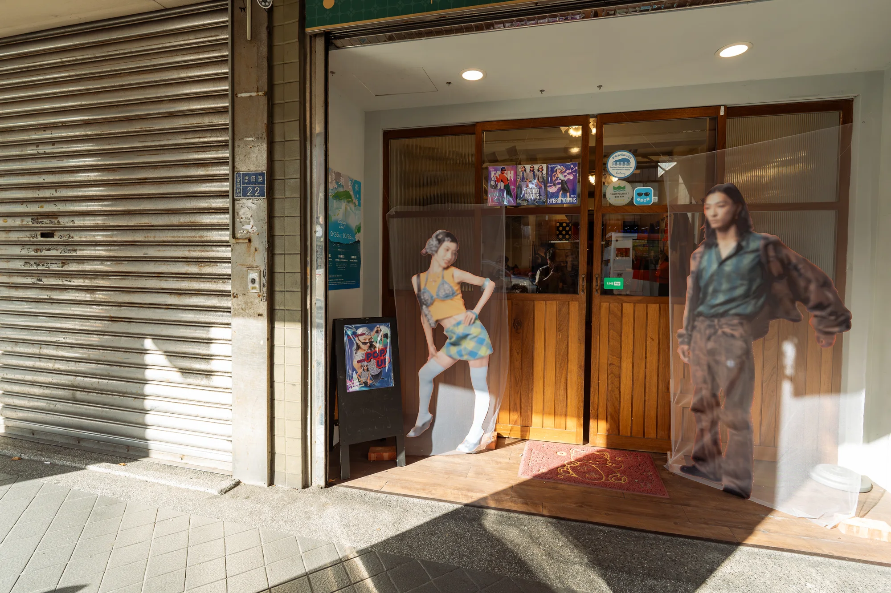
作品《混血青年 Hybrid Youths》從千禧世代的角度出發，回望1960、70年代基隆港的風華歲月。當時的委託行街區、美軍水手和帶著洋貨跑單幫的身影，讓這裡成為流行文化與異國商品交會的熱點。如今這些街區已不同往日，希望透過《混血青年 Hybrid Youths》，與那段熱鬧時髦的城市記憶一起創造新的想像。
這次我將以塗鴉藝術家的身份，邀請服裝造型師一同走入這條老街，重新挑選委託行的復古單品，結合現代潮流穿搭，策劃一場「混血派對」。透過時尚青年的穿著與姿態，我們想讓觀眾看見這座城市曾經的樣貌，也重新觀看那些看似過時的產業和文化，並產生新的觀看方式。
Read in English
Hybrid Youths looks back at the heyday of Keelung Port in the 1960s and 1970s from a millennial perspective. At the time, the commission-store district, American sailors, and traders bringing in foreign goods made the area a meeting point for popular culture and imported products. These streets are no longer what they once were. Through Hybrid Youths, the work seeks to imagine new possibilities alongside the memory of a city that was once lively and fashionable.
This time, I will take on the role of a graffiti artist and invite a fashion stylist to walk through this old shopping district with me. We will select vintage pieces from its commission stores, combine them with contemporary styling, and stage a “hybrid party.” Through the clothing and poses of young people, we hope to reveal something of the city’s past, invite a fresh look at industries and cultures that may seem outdated, and open up new ways of seeing.
現場與細節
VIEWS & DETAILS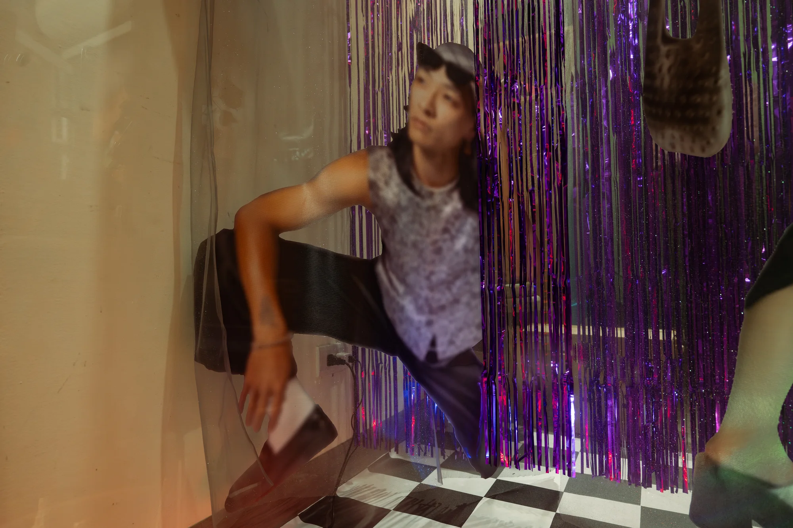
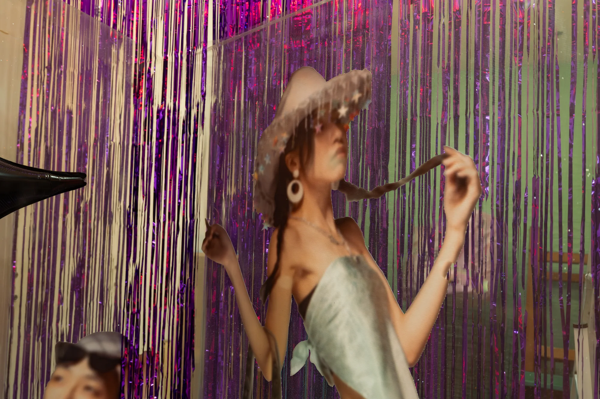
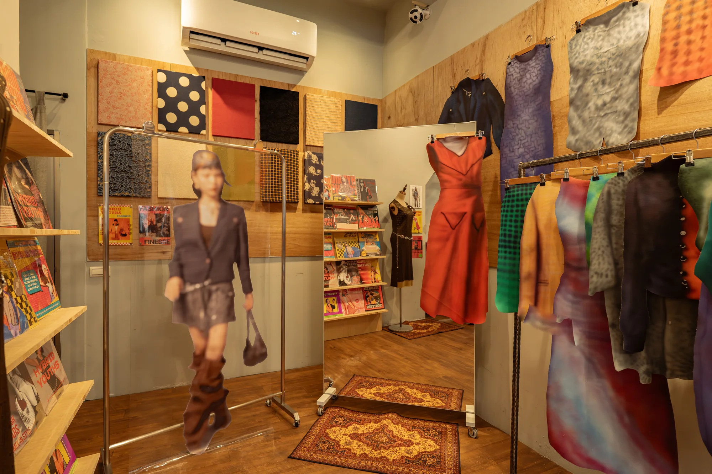
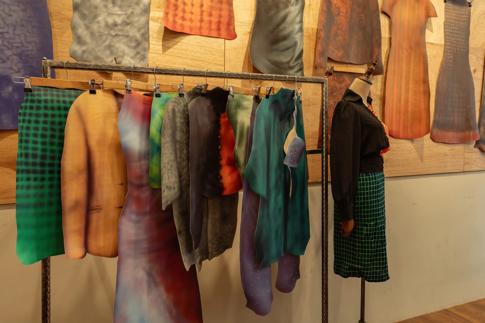
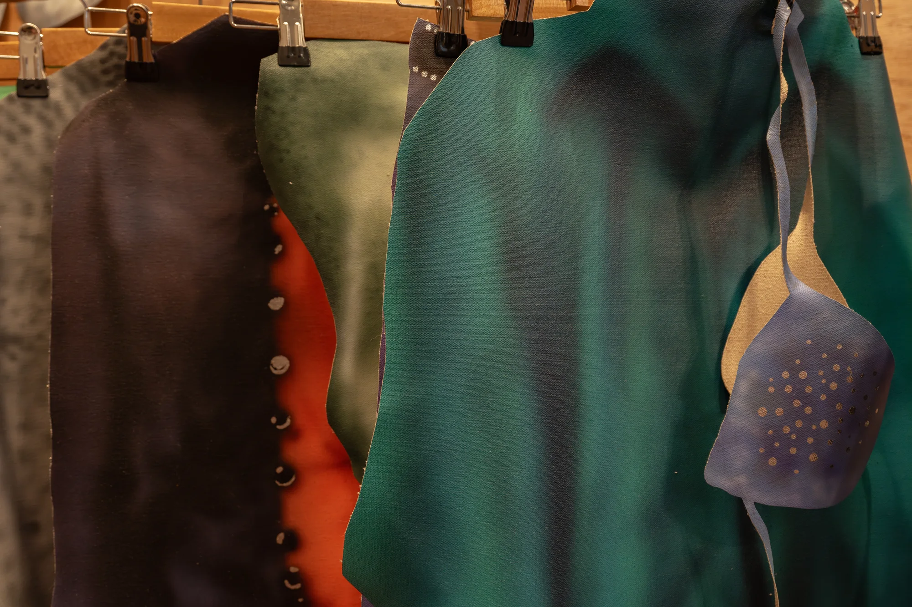
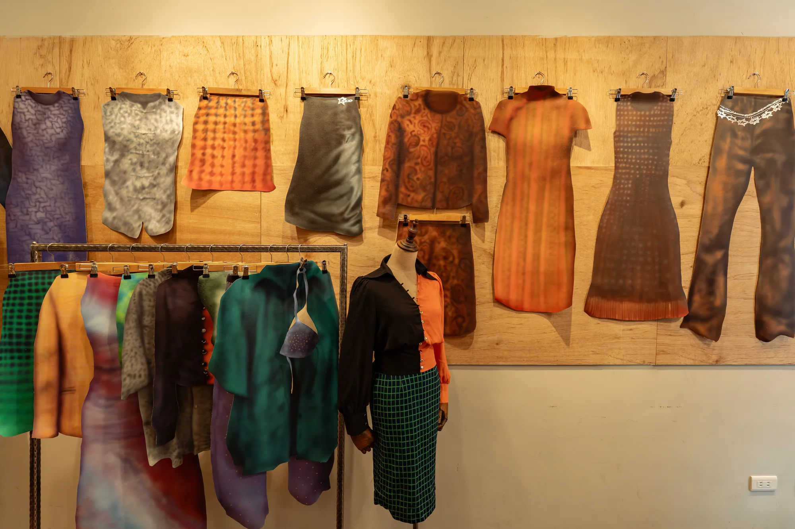
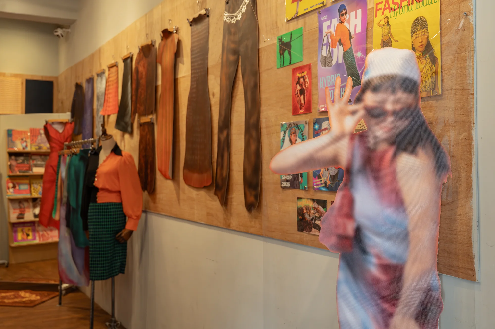
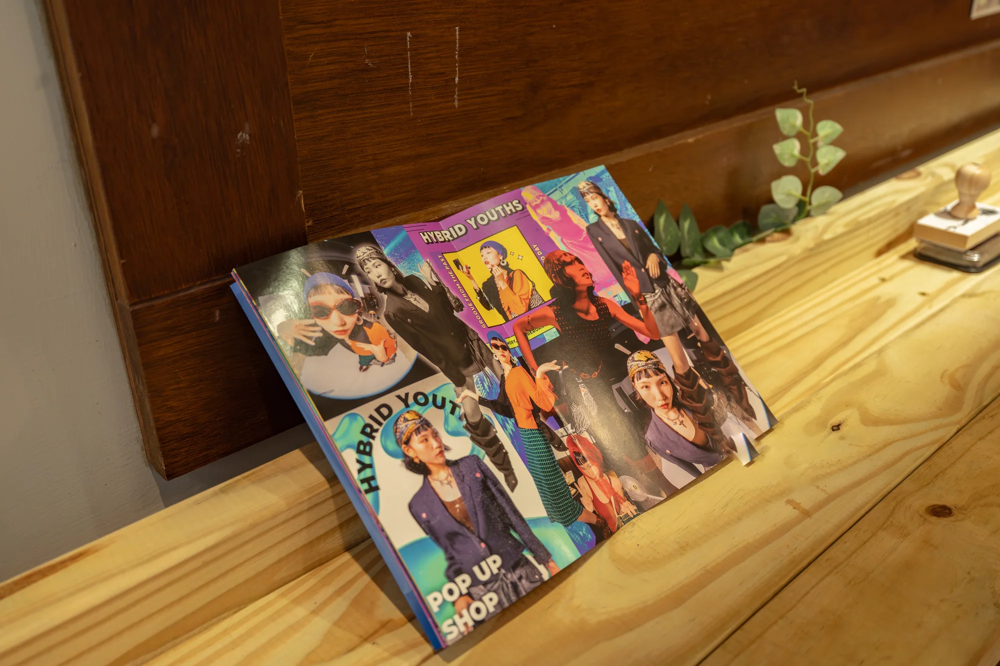
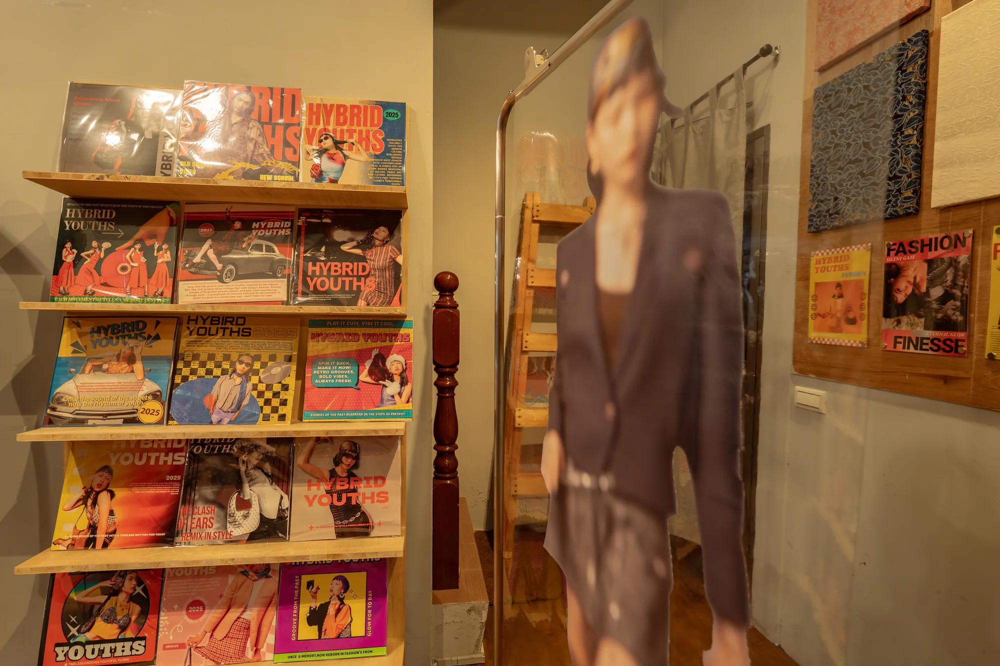
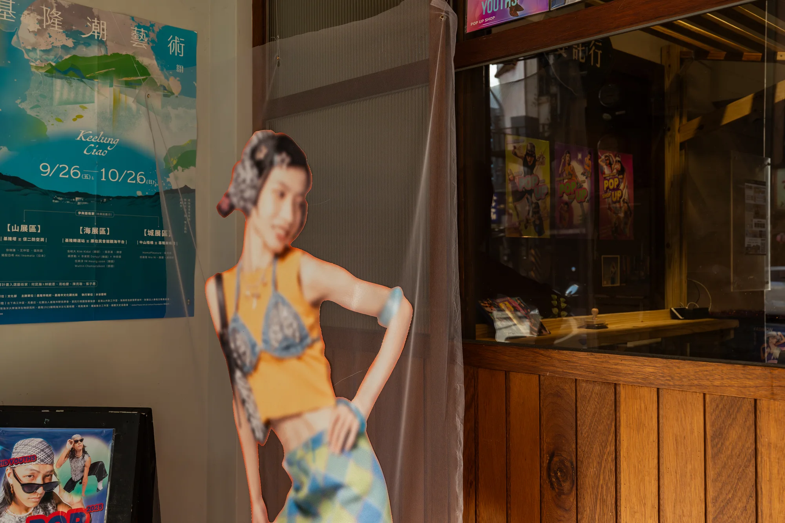
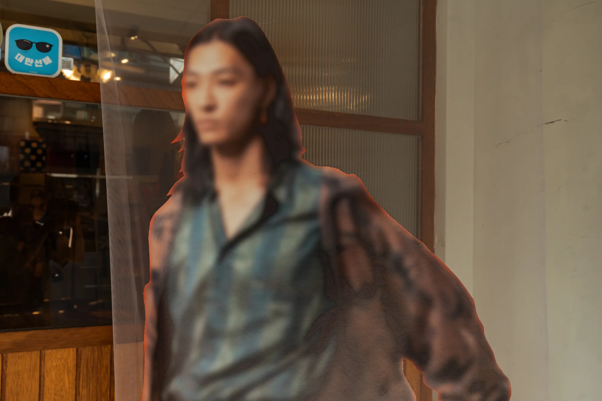